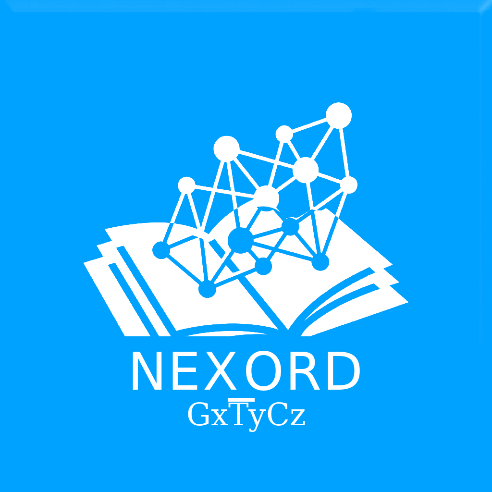

Introduce la clave personal o token intransferible facilitado por el Investigador Principal:
Este informe ofrece una panorámica global del clima y la energía compartida de tu equipo. Refleja cómo cooperamos y qué valores destacan en nuestra dinámica cotidiana, sin comparaciones individuales.
Un equipo sano combina momentos de acuerdo fluido con discrepancias constructivas. Los retos actuales pasan por mantener abiertos los puentes de comunicación transversal entre todas las áreas.
Esta devolución es estrictamente privada y personal. Te permite contrastar tu autopercepción con la mirada de tus compañeros, orientando tu desarrollo hacia tus fortalezas naturales.
Entrada para LaTeX, Overleaf y gestores bibliográficos compatibles:
@misc{cornejo2026nexord,
author = {Cornejo, J. M.},
title = {{NEXORD / VISORD Engine: Plataforma Científica de Sociometría Ordinal Computacional y Diagnóstico Socio-Termodinámico}},
year = {2026},
publisher = {Zenodo},
doi = {10.5281/zenodo.23329641},
url = {https://doi.org/10.5281/zenodo.23329641},
note = {Creative Commons Attribution 4.0 International (CC-BY-4.0)}
}
Cornejo, J. M. (2026). NEXORD / VISORD Engine: Plataforma Científica de Sociometría Ordinal Computacional y Diagnóstico Socio-Termodinámico. Zenodo. https://doi.org/10.5281/zenodo.23329641
TY - GEN AU - Cornejo, J. M. TI - NEXORD / VISORD Engine: Plataforma Científica de Sociometría Ordinal Computacional y Diagnóstico Socio-Termodinámico PY - 2026 PB - Zenodo DO - 10.5281/zenodo.23329641 UR - https://doi.org/10.5281/zenodo.23329641 ER -